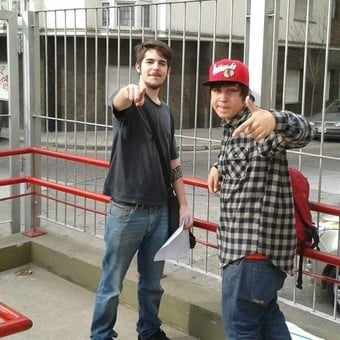
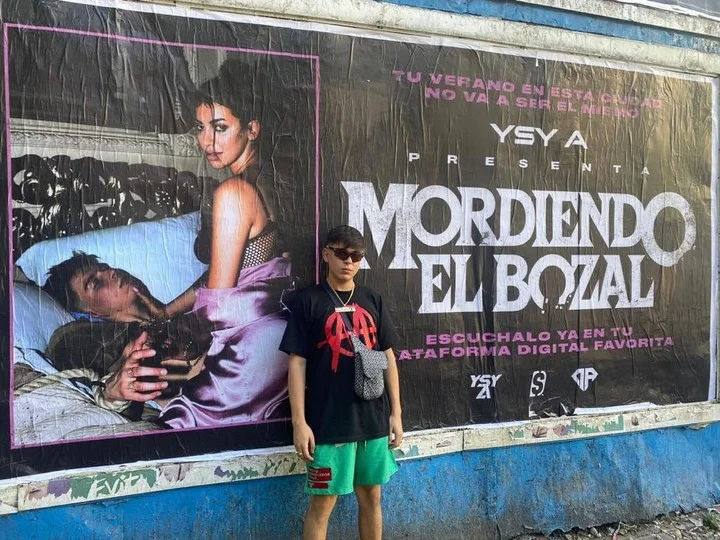

Alejo Nahuel Acosta, mejor conocido en el mundo del espectáculo como Ysy A, es un cantante y compositor que nació el 12 de julio del año 1998. Este intérprete se convirtió rápidamente en uno de los cantantes de rap y hip hop con mayor influencia en Argentina. Alejo se hizo conocido en 2012 cuando formó la competencia de rap El Quinto Escalón con apenas 13 años, junto al músico y presentador Muphasa MC. En 2016 la competición se popularizó de manera desenfrenada, y se volvería la más importantes de Sudamérica, además de ser cuna de muchos artistas emergentes de la escena del trap argentino.

Inicios
2012
Ysy A (en ese momento solo era Alejo) salió al ruedo cuando fundó “El Quinto Escalón”, una competencia que se realizó en el Parque Ridavia del Barrio de Caballito de la metrópolis de Buenos Aires. Ysy A y sus compañeros dejaban fluir la lírica. Posteriormente, el rapero argentino Muphasa se sumó al proyecto volviéndose socio de Ysy A, siendo estos los anfitriones de la competencia, aunque en ciertas ocasiones también participaban en su propio concurso.
Ninguno de los dos se imaginaba que esta pequeña idea podía volverse un movimiento influenciador dentro de la música urbana de la región; tanto así que en los cinco años que estuvieron a cargo, la competencia se transformó en un evento masivo en el cual cientos de raperos se inscribían para participar y demostrar su talento.
2015
El evento tenía la suficiente popularidad convirtiéndose en las batallas freestyle más importantes de Argentina. Tal fue el auge obtenido que “El Quinto Escalón” se volvió tendencia a través de las redes sociales.
2016
Hubo una presentación en donde estuvieron presentes MKS y Underdann, lo que provocó rebasar el millón de visitas a través de YouTube. Esto trajo como consecuencia que la competencia tuviera que mudarse a otro espacio para su siguiente competencia ese mismo año.
2017
El 11 de noviembre fue la última temporada de esta competencia realizada en el Estadio Malvinas Argentina. En esa edición, se presentaron otros raperos de renombre internacional tales como: Teorema, Mcklopedia, Jony B, Valles T, Force, Stigma y Dominic; quienes les daban su toque personal a la competencia. Pero iba a ser el ultimo año en realizarse esta competencia por que Alejo veia que estaba perdiendo la "esencia" de las batallas.
Carrera Musical
El Quinto pasó de organizarse en plazas a teatros debido a la masividad del torneo. Esto provocó que Alejo decidiera acabar con el evento por completo, al ver que estaba perdiendo su esencia. Tras finalizar el Quinto Escalón, YSY A no se quedó en el aire en cuanto a proyectos personales y decidió empezar su carrera musical lanzando asi su primer sencillo el El 21 de noviembre de 2017 "dame droga". Ganando reconocimiento al siguiente año siguio sacando mas canciones y hasta incluso un album.
Año 2018
Durante inicios del 2018, y debido a la explosión musical de Duki, YSY A decidió organizar otro tour auto-gestionado junto a Modo Diablo. Sin embargo, el tour salió de manera inesperada, con los integrantes teniendo deudas y pidiendo dinero prestado para poder regresar de las ciudades donde estaban haciendo la gira. Durante esta época fue que lograron alquilar una localidad que denominaron "La Mansión" junto otro a 2 cantantes Duki y Neo Pistea en esa casa hicieron varias canciones como grupo y solistas esto genero popularizaran el género de trap en Argentina. El 29 de marzo sacó su sencillo «Guapo» en colaboración con Duki, Neo Pistea, C.R.O y Kaktov, consiguiendo una gran repercusión al superar las 25 millones de visualizaciones en YouTube y las 20 millones de escuchas aproximadas en Spotify. El 4 de mayo se presentaron por primera vez en el Teatro Gran Rex, que fue sold out. El 22 de octubre sacó el sencillo «Vamo a Darle», una combinación entre trap y dancehall, que actualmente cuenta con un aproximado de 20 millones de reproducciones en YouTube.
Lista de todas las canciones estrenadas en ese año:
El 27 de marzo de 2019 fue parte de la megacolaboración de trap del sencillo «Tumbando El Club» de Neo Pistea, que alcanzó su pico en el puesto 3 de la lista Argentina Hot 100 de Billboard, siendo considerado como el "himno del trap argentino", es el sencillo más escuchado donde participa Alejo hasta el día de hoy, más de 245 millones de views en YouTube y más de 80 millones de streams en Spotify lo convierten en un gran éxito en la carrera del rapero argentino.
Durante junio y julio YSY A hizo un tour por Sudamérica llamado "Modo Demoledor Tour", en donde empezó a producir su segundo álbum de estudio. El 2 de septiembre sacó su sencillo "Traje unos Tangos", que alcanzó el puesto 45 de Spotify Argentina, y cuyo videoclip fue número 1 en tendencias de Argentina.En octubre de ese mismo año se presentó en el teatro de Vorterix, haciendo sold out.
El 11 de noviembre publicó Hecho a Mano, en donde las 11 canciones que componen el disco están producidas cada una por un productor distinto.
"Traje unos tangos"
Año 2020
Año de pandemia pero eso no significo que Ysy no se quedo de brazos cruzados sino que Entre junio y octubre sacó una serie de sencillos bajo el nombre de #YSYA2020, grabadas en su casa por culpa de la cuarentena por el COVID-19. El volumen 6, titulado «Un Flow de Infarto» contó con producción de Bizarrap.
tambien el 11 de noviembre como es de costumbre saco un nuevo album llamado "Mordiendo el bozal" mostrando un lado mas romantico del artista contando una historia de amor y alejandose un poco del trap con un total de 6 canciones en las cuales conforman una sola historia.

Año 2021-presente
El 29 de enero de 2021 fue parte de las «Music Sessions de Bizarrap», siendo el volumen 37, que alcanzó el puesto 13 de la lista Argentina Hot 100 y que actualmente se encuentra con 70 millones de reproducciones en YouTube y las 30 millones en Spotify. En abril formó parte del track «Pintao» del álbum de Duki, Desde El Fin del Mundo. El 25 de mayo formó parte del exitoso rémix del sencillo «TECA» de Asan y Bhavi junto a Midel, Neo Pistea y Rei.
En mayo del 2022, hizo una presentación de todos sus éxitos en el Estadio Obras Sanitarias, el show duró más de 2 horas y media y consistió en una ruleta que se mostraba en el escenario, la cual giraba y seleccionaba al azar uno de los cuatro proyectos que tiene Ysy A (Antezana 247, Hecho a Mano, Trap de Verdad y Mordiendo el Bozal), y allí tocaba un tema al azar del disco elegido.Al show asistieron más de 10.000 personas (sold out).
Lo curioso de este ultimo show es que al realizar el concierto se detectaron unos sismos producidos en esa zona debido a la gente con los pogos todos saltando al mismo tiempo. No solo eso sino que a los siguientes dias salieron en las noticias mostrando las actividades sismicas del concierto asi el artista consiguiendo un nuevo apodo ysysmo.